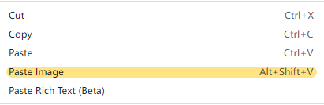

在 《一场“疲惫”的主题制作之旅》 中，已经有了不少博客相关的碎碎念。这里，主要用来浅谈一下当前站点博客系统的 =搭建、编辑及部署 相关的系列流程。

当前站点，使用 Hugo 静态博客生成系统 驱动，部署在个人服务器上。事实上，你可以把生成的站点项目部署在任何可以被访问的地方（比如 Github Page），它本质上是一个包含了若干 .html 文件及相关静态资源的文件夹。
更新日志
- 2023-04-05 21：31 添加新的日常编辑方式 - 使用 Typora
> 更新日志仅是为了记录每篇文章的更新过程
准备篇
……
搭建篇
……
编辑篇
这里，我们以当前文章的创建及编辑过程为例。
创建文章
= 怎么说呢？这个章节写的过于太细节了……好像…… 😅
我们可以使用以下命令来创建文章：
hugo new posts/how-do-i-blog/index.md # 推荐
# 或
hugo new posts/how-do-i-blog.md # 不推荐
这里我们使用第一条命令，该命令会自动生成如下目录层级下 .md 文件。
content
├── posts
│ ├── how-do-i-blog
│ │ ├── imgs
│ │ │ └── 1aa09c580e674b09e82c722a3689d280012f2ae6e1700e924deeef558347d91a.png
│ │ └── index.md
为什么不直接使用 how-do-i-blog.md ，而使用 how-do-i-blog/index.md ？
正如上述目录层级中所反映的，如此方便我们把当前文件所需要的资源（如图片 imgs ）都放在当前文章的层级下，方便管理。
这样做还有额外的好处，我们将在后面 插入图片 的部分进一步说明。
为什么我们直接手动创建 .md 文件呢？
事实上，你完全可以手动创建它，但手动创建出的 index.md 文件是空白的，而通过上述命令创建出的 index.md 文件则会包含类似以下内容文件头：
---
title: "How Do I Blog"
date: 2023-03-06T09:40:02+08:00
draft: false
categories: [_Misc]
tags: []
card: false
weight: 0
---
它们包含了一些 Hugo 生成文章时要使用到的信息，我们可以把 title 修改为自己喜欢的文章标题，并为其设置分类和标签等。以下，是我们修改之后的文章头信息：
---
title: "我是怎么写博客的"
date: 2023-03-06T09:40:02+08:00
draft: false
categories: [关于]
tags: []
card: false
weight: 0
---
我们这里把文章名称改为了 我是怎么写博客的 ，并把它分类到 关于 类别中。
这些头信息是怎么生成的？在哪里配置它们？
它位于站点根目录下的 /archetypes/default.md 中，该文件默不存在。一般会启用你所使用主题下的 themes/virgo/archetypes/default.md 文件。
.
├── archetypes
│ ├── default.md
以下是 loveminimal/hugo-theme-virgo 主题中的 default.md 内容：
---
title: "{{ replace .Name "-" " " | title }}"
date: {{ .Date }}
draft: false
categories: [_Misc]
tags: []
card: false
weight: 0
---
你可以修改它，或者在站点根目录下，创建新的 default.md 文件，并修改为自己喜欢的初始配置。
插入图片
在文章中插入图片是一个相对高频的操作。在第三方的博客平台中，一般来说直接复制图片并粘贴到要插入的位置就可以了，很方便。而编辑 .md 文件，插入图片就稍微麻烦一些。
我们通过  在文章中插入图片，默认情况下，你需要经过：
1. 搜索图片
2. 另存图片到本地
3. 编辑 `` 引用
……
很繁琐！
而且还不能控制图片的‘显示’尺寸，需要插入图片数量过多的时候，简直就是一种折磨了。
有没有一种更好的方式来插入图片呢？
很幸运，有！
我平时是使用 VSCode 来管理站点内容和编辑 .md 文件的，其中有一款插件很好地解决了这个问题。
它提供了丰富的自定义设置选项，这里主要用到以下几种：
- Markdown-image › Base: File Name Format ，设置为
${hash}，当然有其它各种格式可选组合； - Markdown-image › Base: Image Width ，设置为
400，默认宽度设为400px； - Markdown-image › Local: Path ，设置为
./imgs，生成的图片放在当前文章同级目录下的imgs文件夹中。
这也是上文中我们推荐使用
hugo new posts/how-do-i-blog/index.md命令来生成文章的原因之一。
使用该插件，你只需要复制所需要图片（本地或网络图片），并通过其提供的粘贴方式（右键选择）插入到位置即可。如此，你的 .md 文件中，就会插如下内容：
<img alt="picture 3" src="imgs/30737f6467ed6269eed8911b8a915f47b9fed706b8f892efd3271d9b6a76181c.png" width="400" />
它会被渲染成下面这张图片，是不是很方便！
它的原理是什么？
它会读取你剪切板中刚刚复制的图片数据，在你粘贴的时候，重新生成一份拷贝，并在 .md 文件中，插入对应的图片格式，并引用。真的很方便！🎉
语法增强
我们在 hugo-theme-virgo 主题中，对 Markdown 的语法提供了一些增强功能 - 下划线、文字高亮、标注、折叠板 ，你要以在 《关于 Virgo 需要知道的一些事》：标记语法增强 文章中了解它。
当然，如果你使用其它主题，这些增强的样式是无法生效的，幸运的是，它在其他主题中依然得到渲染 - 使用斜体显示，你并不会丢失你想表达的内容。
使用 Typora 编辑
= 现在的编辑操作就是使用 Typora 完成的。 😄
之前的 VSCode 使用的不是很爽吗？为什么切换为 Typora 了呢？
VSCode 确实很爽，到目前为止，我也经常使用它。切换到 Typora 的原因也很简单，家里的电脑性能不行，新的主机配置还在纠结中……
更多原因可以查看 一款 Typora 主题 中的描述。
PS： VSCode 真的是一款非常优秀的编辑器，插件丰富且优质，可扩展性强，可轻可重。
使用 Typora 的感觉怎么样？
很好！如 一款 Typora 主题 中所描述的那样，配合自己制作的主题（由站点样式适配），基本上实现了所见即所得的编辑。另外，Typora 本身集成了许多 Markdown 相关的快捷键，很直观也很好用，尤其是当你专注于编写内容的时候。
它还有‘专注模式’和‘打字机模式’，很舒心。
其内置的图片插入功能也不错，基本上和 插入图片 章节中的实现是相同的，原理没有探究。怎么说呢，Typora 上的相对来说，更加符合日常的编辑逻辑，还贴心地增加了可以缩放图片的选项，最最重要的还是‘所见即所得’，你可以实时看到你的图片。
部署篇
当你想部署你的站点内容到托管平台时，你可能会经过以下步骤：
1. 执行 `hugo` 命令，生成站点内容，默认放在站点根目录的 `public` 文件夹中；
2. 复制内容包，上传到托管平台；
……
如果，只操作一次的话，不是很复杂，但如果，你的内容更新比较频繁，那就有些烦扰了。内容包的部署方式有很多，各有优缺。
脚本部署
我们这里，使用脚本部署，一次性配置之后，每次部署只需要执行一条简单的命令即可。分享出来，供大家参考使用。
我们的站点目录如下所示：
.
├── config.toml
├── content
│ ├── about
│ ├── archive.md
│ ├── _index.md
│ ├── nav
│ ├── posts
│ └── search.md
├── package.json
├── README.md
├── resources
│ └── _gen
├── scripts
│ ├── deploy.sh
│ └── gitee.sh
其中， scripts/deploy.sh 便是我们定义的部署脚本，其内容如下：
#!/bin/sh
# -------------------
# Deploy posts to `loveminimal.github.io`
# -------------------
if [ -d "public" ]
then
# 如果你是部署到 GitHub ，并绑定了域名，那你可能需要启用该行，以
# 保证其正确的指向
# rm -rf "public/CNAME" && cp -r "CNAME" "public/"
# 拷贝内容包 public 到一个临时文件夹 .temp ，并
# 用 git 初始化管理该它
cp -r "public" "../.temp"
cd "../.temp"
pwd
git init
git add .
git commit -m "Posts update."
# 添加远程库，引得我们使用的是个人服务器的仓库地址，如果
# 你是托管在 GitHub 上，那么连接的对应的远程库即可 - <YOUR_USERNAME>.github.io
# 如果你是在 GitHub ‘政治正确’后创建的库，其默认分支为 main, 那你
# 需要 master:main 而不是 master
git remote add origin jack@ovirgo.com:/home/jack/.repo/site.git
git push -f origin master
# git remote add origin https://github.com/loveminimal/loveminimal.github.io.git
# git push -f origin master:main
# 清除临时文件夹
cd ..
rm -rf ".temp"
# 返回站点目录
cd "site"
fi
如上所示，只需要在站点根目录下，运行 source scripts/deploy.sh 就可以静待站点部署完成了。
初看，上述脚本初看可能有些混乱，尤其是对初学者来说。但其实，如果你愿意，理论上你需要：
- 更改远程仓库地址；
- 更改站点目录，即可。
也许你会遇到各种各样的问题，但你也会从中收获到不少的乐趣，不是嘛~~
命令简化
使用 source scripts/deploy.sh 还是有点太复杂了？有如下限制：
- 需要进行到站点根目录才可以运行它；
- 部署后，站点内的内容包并没得到清理。
哈，你只需要多加几条命令即可，如下：
cd ~/AppData/Roaming/site && rm -rf public && hugo && source scripts/deploy.sh && rm -rf public
如此，无论当前你在那一种路径，都会：
- 自动进入站点根目录（此处是
site）； - 删除站点下旧的
public（如果有的话）； - 根据当前内容生成新的
public内容包； - 执行部署脚本，发布到对应托管平台；
- 清理掉生成的
public内容包。
Emm… 还是长啊，每次都要键入这么长，太麻烦了，怎么办？
那么你就需要了解一些关于 bash alias 方面的知识了，如下所示，在当前用户家目录下，创建 .bash_aliases 文件（若无），并添加如下内容：
alias ssd="cd ~/AppData/Roaming/site && rm -rf public && hugo && source scripts/deploy.sh && rm -rf public"
保存后，在用户家目录下，运行 source .bashrc 命令使 .bash_aliases 中的别名生效。
OK，现在，当你想部署站点的时候，你只需要运行键入 ssd ，回车即可完成部署。
‘用户家目录’是什么？
在 Windows 下，有两个家目录：
- 用户家目录，如
C:\Users\jack，一些软件的默认配置会放在该目录下； - 用户漫游家目录，如
C:\Users\jack\AppData\Roaming，另一些软件的配置又会放在这个目录下。
😅 微软的东西真的有点混乱哈。
如果，你使用的是 GNU/Linux 系统，那么家目录就只有一个喽，如 /home/jack 。